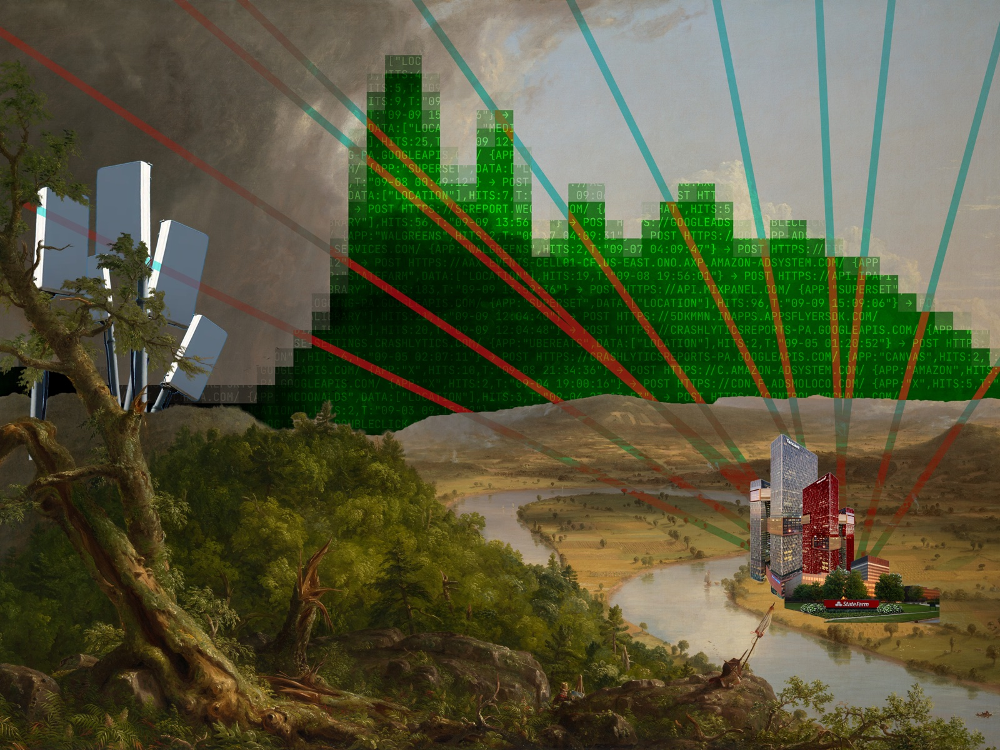

%% 00/02█
root/
├── 00_art_economy.html <
├── 01_neighboring_studios.html
├── 02_oscillation.html
└── external/
├── google/privacy
├── amazon/privacy
└── mixpanel/privacy

Art apears to stand outside this realm of instrumentality, bureaucratized life and its complementary mass culture. That it can do so is due to art's peculiar economy, founded on its resistance to mechanical reproduction.